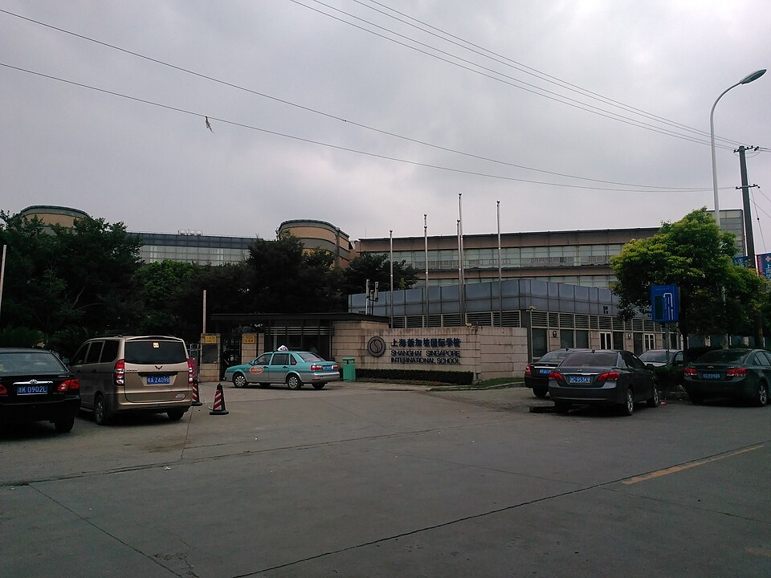

상하이 싱가포르 국제학교 민항 캠퍼스 정문 · 사진: WhisperToMe / Wikimedia Commons, CC0
상하이 싱가포르 국제학교(SSIS) — 초등은 싱가포르 교육과정, 끝은 IB 디플로마입니다
⚠️ 약칭 주의 — 이 학교의 약칭 SSIS는 베트남 호치민의 사이공 사우스 국제학교(Saigon South International School)와 겹칩니다. 두 학교는 아무 관계가 없습니다. 검색하실 때는 약칭만 쓰지 마시고 "상하이 싱가포르" 또는 Shanghai Singapore International School을 함께 넣으세요.
1. 어떤 학교인가 — 1996년에 문을 연 K-12 학교
상하이 싱가포르 국제학교(Shanghai Singapore International School, SSIS)는 1996년에 문을 연 것으로 알려진 유아 과정부터 12학년까지의 학교입니다. 중국에서 외국 국적 자녀를 받는 학교 범주에 속하고, 현재 중심 캠퍼스는 민항구 주젠로(Zhujian Road) 쪽에 있는 것으로 안내됩니다.
교육과정의 뼈대는 다음과 같이 소개됩니다.
· 유아·초등 — 싱가포르 교육과정을 바탕으로 한 과정
· 중등 저학년(7~8학년 무렵) — 케임브리지 계열 과정으로 넘어가는 구간
· 9~10학년 — 케임브리지 IGCSE 2년 코스
· 11~12학년 — IB 디플로마 2년 코스
영어와 중국어를 함께 쓰는 학교로 안내되고, 중국어는 수준별 갈래로 나누어 배치하는 것으로 소개됩니다. 중국어를 전혀 못 하는 상태로도 들어갈 자리가 있다는 뜻이지만, 과목이 하나 더 늘어난다는 뜻이기도 합니다(→ 국제학교 중국어 과외 가이드).
※ 학생 수·학비·연도별 시험 결과처럼 해마다 달라지는 수치는 이 글에 적지 않았습니다. 캠퍼스 구성과 학년별 과정은 바뀌어 온 것으로 알려져 있으니 학교 요강을 직접 확인하세요.
2. 이 글의 핵심 — "싱가포르 교육과정"이 실제로 뜻하는 것
한국 학부모님들께 싱가포르라는 말은 보통 "싱가포르 수학"으로 먼저 다가옵니다. 그 느낌이 아주 틀리지는 않습니다. 싱가포르 교육과정은 개념을 그림과 모형으로 먼저 잡고, 같은 유형을 촘촘히 반복해 숙달시키는 방식으로 알려져 있습니다. 한국식 학습에 익숙한 아이에게는 초등 구간이 비교적 편하게 느껴지는 편입니다.
문제는 그다음입니다. 이 학교는 그 방식으로 끝까지 가지 않습니다. 중등에서 케임브리지로, 고등에서 IB로 넘어가면서 점수를 주는 기준 자체가 바뀝니다. 아래 표가 이 글에서 가장 중요합니다.
| 구간 | 무엇으로 점수가 나오나 | 한국 학생이 막히는 곳 |
|---|---|---|
| 유아·초등 (싱가포르 교육과정) | 개념 모형과 반복 훈련 · 정확한 답 | 수학은 잘 따라가는데 영어 읽기가 조용히 밀립니다 |
| 중등 저학년 | 교내 평가 · 과제가 길어지기 시작 | 답은 맞는데 풀이 서술에서 깎이기 시작합니다 |
| 9~10학년 (IGCSE) | 2년이 한 코스 · 끝에 외부 시험 | 10학년에 합류하면 1년 치를 건너뛴 채 시험을 봅니다 |
| 11~12학년 (IB 디플로마) | 2년이 한 코스 · 과제·내부 평가 비중이 큼 | 계산력만으로 안 되고 글로 설명하는 힘이 필요합니다 |
표의 첫 줄과 마지막 줄을 나란히 보십시오. 초등에서 칭찬받던 능력과 고등에서 점수를 만드는 능력이 서로 다릅니다. 그래서 이런 구조의 학교에서 자주 보이는 장면이 하나 있습니다. 저학년 내내 수학은 상위권이었는데 9학년이 지나면서 같은 과목 점수가 내려가는 경우입니다. 실력이 줄어서가 아니라 묻는 방식이 바뀌어서입니다.
그러니 이 학교를 보실 때 세워야 할 계획은 단순합니다. 초등 구간에 수학을 더 앞서 나가게 하는 것보다, 그 시간에 영어 읽기와 쓰기를 쌓아 두는 쪽이 나중에 돌려받는 것이 큽니다. 평가 방식의 차이 자체는 형성평가·총괄평가 글에 정리해 두었습니다.
3. 한국(주재원) 학생이 겪는 어려움 — 합류 시점이 거의 전부입니다
세 체계가 이어 붙은 학교에서는 "몇 학년에 들어가느냐"가 "어느 체계의 한가운데로 들어가느냐"와 같은 말이 됩니다. 발령 시기에 따라 할 일이 전혀 달라집니다.
| 합류 학년 | 걸리는 것 | 도착 전에 해 둘 일 |
|---|---|---|
| 초등 | 수업 자체보다 영어 읽기 수준 | 읽기 레벨을 기록으로 남기고 한 단계 위 책을 끝까지 → 리딩 레벨 읽는 법 |
| 7~8학년 | 과제가 길어지고 기준표 채점이 들어옴 | 풀이와 근거를 문장으로 쓰는 연습 → 숙제·과제 관리 |
| 10학년 | 가장 위험한 자리 · IGCSE 2년 코스의 중간 | 중간 합류가 되는지, 어느 과목이 부담인지 학교에 먼저 질문 |
| 11학년 직전 | DP 과목 조합이 되돌리기 어려움 | 과목 신청 구조부터 확인 → 과목 신청(Course Selection)·IB 점수 구조 |
셋째 줄을 특히 보셔야 합니다. 한국의 중3~고1 무렵에 발령이 나는 가정이 많은데, 그 시기가 정확히 IGCSE 2년 코스의 한가운데입니다. 아이는 1년 치 범위를 배우지 않은 채로 외부 시험을 향해 가게 됩니다. 편입 전반은 편입·전학 총정리에 정리해 두었습니다.
4. 민항구라는 위치 — 그리고 등록 자격
상하이는 도시가 넓어서 학교가 집을 정합니다. 이 학교의 중심 캠퍼스는 황푸강 서쪽, 민항구 쪽입니다. NAIS 푸동처럼 강 동쪽에 있는 학교와는 생활권이 아예 다릅니다. 근무지가 푸동이라면 아침저녁으로 강을 건너야 하므로, 집을 계약하기 전에 편도 시간을 분 단위로 적어 보시는 것이 먼저입니다(→ 통학·스쿨버스).
또 하나, 이 학교는 캠퍼스 구성이 바뀌어 온 것으로 알려져 있습니다. 한동안 쉬후이 쪽에도 캠퍼스를 두었다가 민항 쪽으로 정리된 것으로 전해집니다. 그래서 오래된 한국어 후기에 적힌 주소와 지금의 주소가 다를 수 있습니다. 블로그 글을 읽으실 때 작성 연도부터 보시고, 주소·학년 구성은 올해 안내문으로 다시 확인하세요.
⚠️ 중국 본토는 등록 자격부터 확인합니다. 외국인 자녀 학교는 시 교육 당국이 정한 자격 안에서만 등록할 수 있는 것으로 안내됩니다. 자격 유형과 필요한 서류는 해마다 바뀌니 이 글로 판단하지 마시고 입학처에 직접 확인하세요. 일반적인 설명은 중국 국제학교 등록 자격 글에 정리해 두었습니다.
5. 그래서 이렇게 준비합니다 — 그리고 상하이라는 조건
· ① 아이가 들어갈 구간부터 적습니다. 초등인지, 7~8학년인지, IGCSE 한가운데인지에 따라 할 일이 전혀 다릅니다(위 3번 표).
· ② 초등이면 영어 읽기를 먼저 올립니다. 수학 선행보다 돌려받는 것이 큽니다.
· ③ 중등이면 서술을 손봅니다. 답이 아니라 과정을 글로 쓰는 훈련입니다. → 입학 준비 총정리
· ④ 중국어 갈래를 확인합니다. 어느 수준 반에 배치되는지, 그 반이 그 학년에 열리는지 물으세요. → 중국어 과외 가이드
· ⑤ 학교 → 노선 → 집 순서를 지킵니다. 민항과 푸동은 같은 도시가 아니라고 생각하시는 편이 안전합니다.
📌 중국은 한국과 시차가 1시간입니다. 한국 저녁 8시가 상하이 저녁 7시라, 아이가 하교하고 저녁을 먹은 뒤 시간대에 화상 수업을 잡기가 수월합니다. 다만 학사 일정은 한국과 어긋나므로 과외 계획은 현지 학사 일정에 맞춰 세우셔야 합니다. → 국제학교 학사 일정
관련 검색어: 상하이국제학교 · 상하이국제학교수학과외 · 상하이싱가포르국제학교 · 민항구국제학교 · 상하이주재원과외
정리
상하이 싱가포르 국제학교는 1996년에 문을 연 것으로 알려진 민항구의 K-12 학교이고, 싱가포르 교육과정 → 케임브리지 IGCSE → IB 디플로마로 세 체계가 이어 붙는 구조입니다. 이 글에서 가져가실 것은 학교 하나의 정보가 아니라 "초등에서 잘하던 방식이 고등에서 그대로 통하지 않는다"는 한 줄입니다. 지금 아이가 어느 구간에 있는지에 따라 당장 할 일이 다르니, 30분 무료 수업으로 현재 위치부터 확인해 보시기 바랍니다. (학년 구성·과정 운영·캠퍼스는 바뀔 수 있으니 반드시 학교 요강을 직접 확인하세요.)